This project was created using HTML, CSS, and JavaScript. It was designed as an interactive game with simple input prompts and multiple story outputs. It evolved through three iterations, with each version incorporating user feedback and new design strategies. The final version, Madlibs 3.0, delivers a significantly improved user experience, functional enhancements, and playful visual design.
In Madlibs VR1, I built a basic prototype that collected user inputs and redirected them to a separate page to display the completed story. The experience was functional but disjointed, lacking stylistic coherence and seamless interaction.
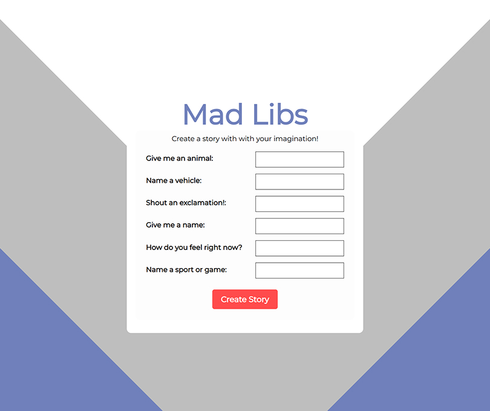For Madlibs VR2, I improved the user interface with a more cohesive visual layout, introduced a Clear button for easier input resets, and replaced the page redirection with a dynamic pop-up window that displayed the story inline—improving the overall flow and keeping the experience on a single page.
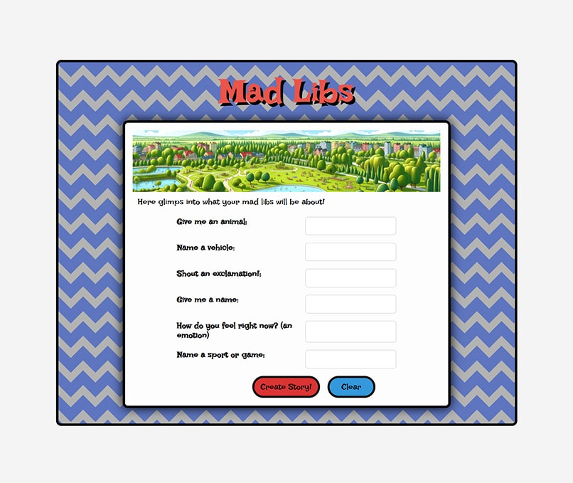 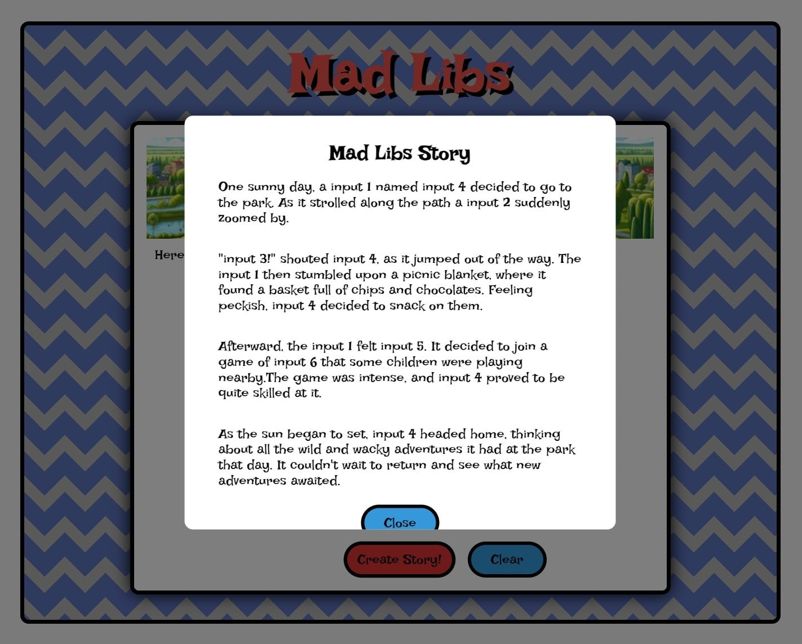Madlibs 3.0 includes many visual and functional improvements. I redesigned the layout for clarity and centered alignment, updated button colors, and added hover animations. A Random button was added to auto-fill input prompts with playful suggestions. I also implemented an introduction popup that explains how to play the game, which can be reopened at any time using a “?” button.
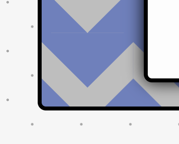 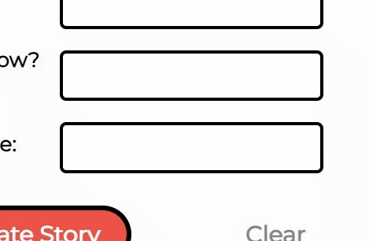 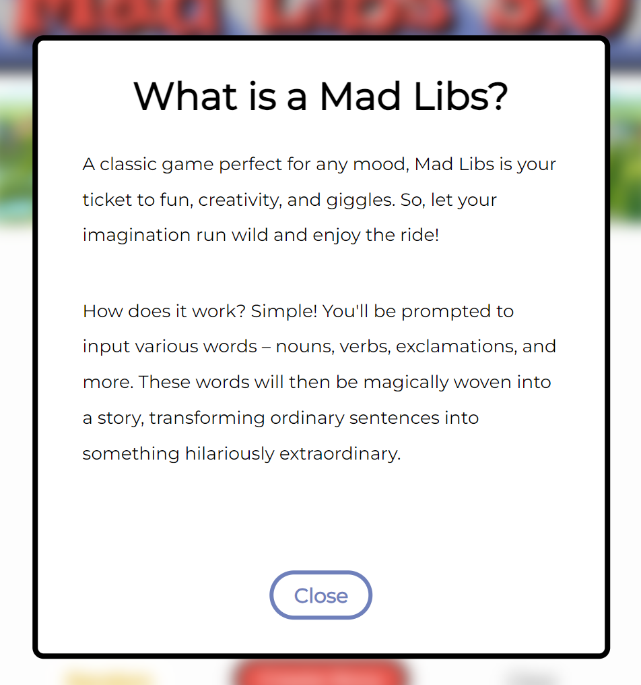 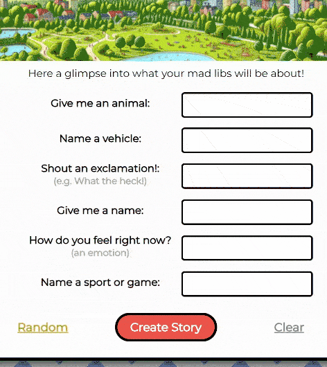To improve replay value, I introduced a pool of story templates. A random template is selected each playthrough, which stitches the user’s inputs into one of several funny, unique narratives.
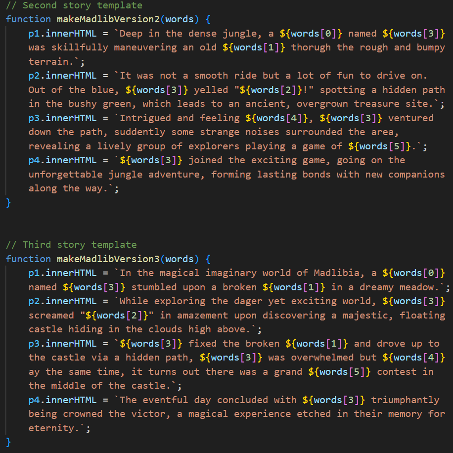User feedback was instrumental in shaping each version of Madlibs. Early testers of Madlibs 1.0 found the redirection to a new page disruptive and confusing. They also noted the need for clearer instructions and a more engaging layout.
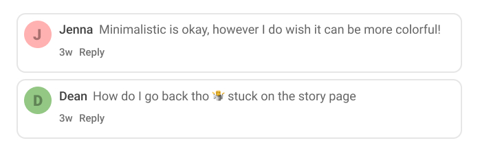With Madlibs 2.0, users appreciated the streamlined story popup that stayed on the same page. However, some still found the interface too plain and suggested features to make it more fun and dynamic—such as random word suggestions and better visual design.
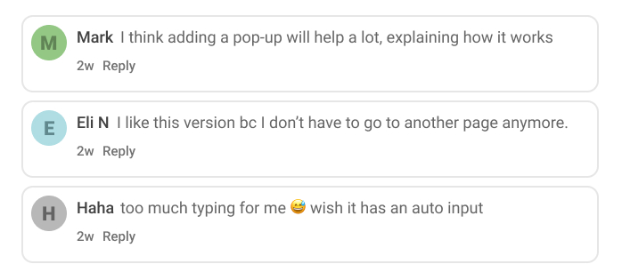These insights directly informed the development of Madlibs 3.0, which introduced a playful UI, randomized input button, improved font legibility, hover effects, and a helpful introductory popup. The changes led to positive feedback around ease of use, replay value, and overall enjoyment.
From the start, I planned out the game's structure through flowcharts and layout sketches. The initial concept included separate pages for inputs and results, while later sketches for version 2.0 focused on keeping the interaction contained within a single interface. These sketches helped me visualize the user journey and refine UI components before implementation.
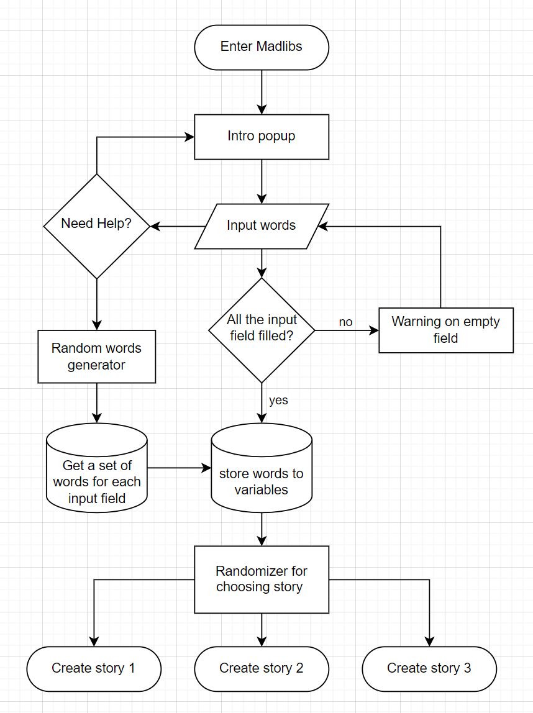 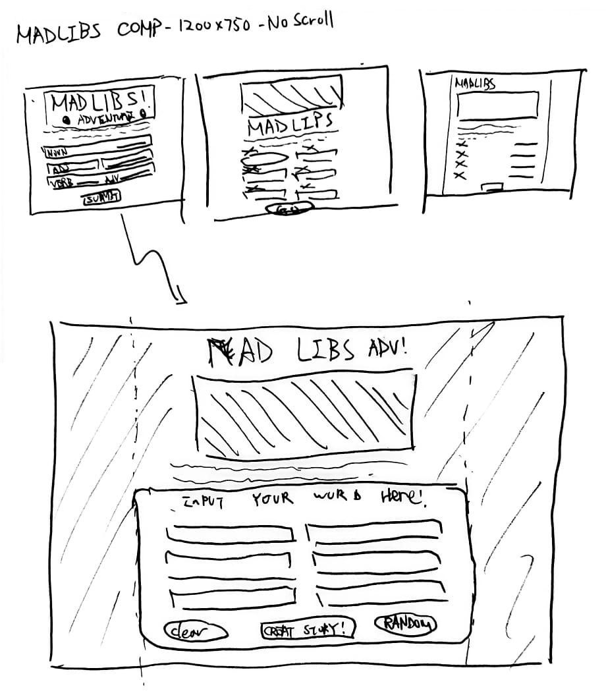This project helped refine my front-end development skills and deepened my understanding of how micro UX changes—like clear onboarding or visual feedback—can dramatically affect usability and engagement.